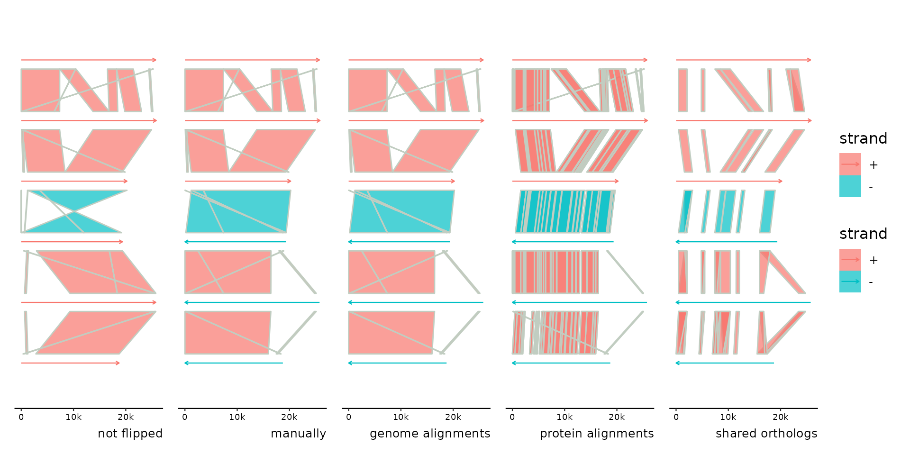
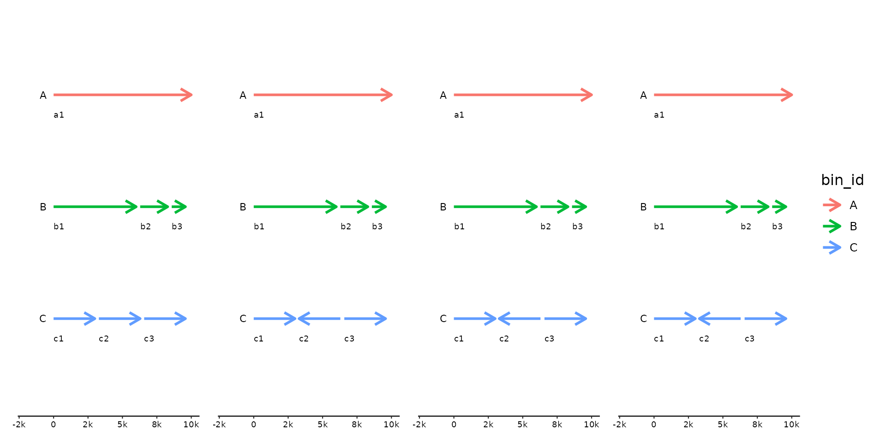
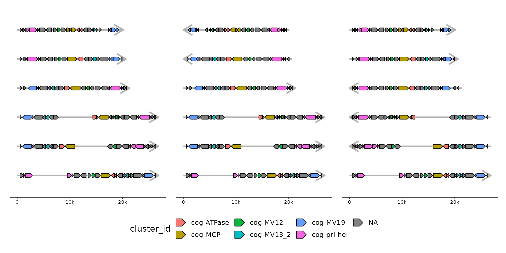
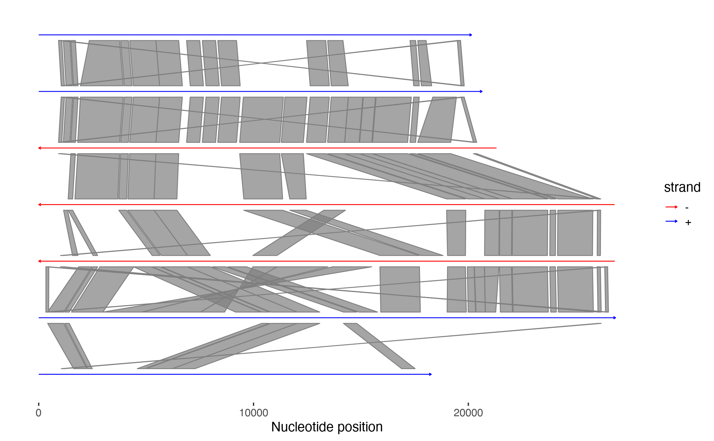

flip and flip_seq reverse-complement specified bins or
individual sequences and their features. flip_nicely automatically
flips bins using a heuristic that maximizes the amount of forward strand
links between neighboring bins.
flip(x, ...) flip_seq(x, ..., .bins = everything()) flip_nicely(x, link_track = 1, min_coverage = 0.2)
| x | a gggenomes object |
|---|---|
| ... | bins or sequences to flip in dplyr::select like syntax (numeric position or unquoted expressions) |
| .bins | preselection of bins with sequences to flip. Useful if selecting
by numeric position. It sets the context for selection, for example the
11th sequences of the total set might more easily described as the 2nd
sequences of the 3rd bin: |
| link_track | the link track to use for flipping bins nicely |
| min_coverage | at least this much of the shorter bin must be covered by links supporting a flip to actually carry it out. |
p <- gggenomes(emale_seqs[1:7,], links=emale_links) + geom_seq(aes(color=strand), arrow=TRUE) + geom_link() + scale_color_manual(values=c("+"="blue", "-"="red")) # some bins would align nicer if reverse-complemented p# flip bins 3, 4 and 5 p %>% flip(3:5)# flip automatically based on links p %>% flip_nicely()# also works with links from clusters p <- gggenomes(emale_seqs[1:7,], emale_genes) + geom_seq(aes(color=strand), arrow=TRUE) + geom_link() + scale_color_manual(values=c("+"="blue", "-"="red")) p %>% add_clusters(genes, emale_cogs) %>% flip_nicely(emale_cogs)#>